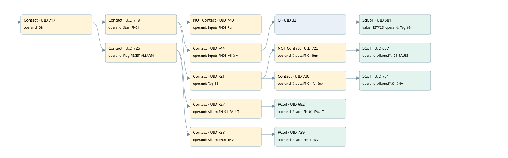

fn01
allarms 1 · 검색 색인 순서 18 · 원본 내부 NID 추정 20
백업 PLF 원본의 3048880 바이트 위치에서 복원한 XML. 검색 문서 1798의 객체 키 161022006462000000000000와 연결했다. 이름 해석 16/16개. 남은 RefId는 상수 또는 미해석 참조다.
연결 구조 다시 그리기
원본 Part/PCon/Wire를 이용한 연결도다. TIA 화면의 래더 배치 또는 실행 결과를 재현한 그림은 아니다. 핀 연결은 아래 표와 원본 XML을 기준으로 읽는다. 노드 위에 마우스를 두면 피연산자 이름을 볼 수 있다.

접점·코일·블록과 피연산자
| Part UID | Gate | Negated 핀 | 연결 피연산자 |
|---|---|---|---|
| 717 | Contact | operand = ON | |
| 719 | Contact | operand = Start FN01 | |
| 740 | Contact | operand | operand = Inputs.FN01 Run |
| 744 | Contact | operand = Inputs.FN01_All_Inv | |
| 32 | O | ||
| 681 | SdCoil | value = S5T#2S; operand = Tag_63 | |
| 721 | Contact | operand = Tag_63 | |
| 723 | Contact | operand | operand = Inputs.FN01 Run |
| 687 | SCoil | operand = Allarm.FN_01_FAULT | |
| 730 | Contact | operand = Inputs.FN01_All_Inv | |
| 731 | SCoil | operand = Allarm.FN01_INV | |
| 725 | Contact | operand = Flag.RESET_ALLARM | |
| 727 | Contact | operand = Allarm.FN_01_FAULT | |
| 692 | RCoil | operand = Allarm.FN_01_FAULT | |
| 738 | Contact | operand = Allarm.FN01_INV | |
| 739 | RCoil | operand = Allarm.FN01_INV |
접점 경로를 펼친 조건식
Contact·O/A·비교기의 원본 연결을 읽기 쉽게 펼친 보조 해석이다. POWER는 전원 레일 시작을 뜻한다. 호출 블록·에지·타이머의 내부 동작과 다중 쓰기 순서는 이 표로 실행 검증하지 않았다. 미해석 핀과 RefId는 원문 연결표에서 확인한다.
| UID | 동작 | 대상 | 원본 접점 경로 | 내용 |
|---|---|---|---|---|
| 681 | SdCoil | Tag_63 | (((ON AND Start FN01) AND NOT [Inputs.FN01 Run]) OR ((ON AND Start FN01) AND Inputs.FN01_All_Inv)) | 시간 동작 SdCoil; 타이머 의미 추가 확인 / 시간 인자 S5T#2S |
| 687 | SCoil | Allarm.FN_01_FAULT | (((ON AND Start FN01) AND Tag_63) AND NOT [Inputs.FN01 Run]) | 조건 성립 시 Set |
| 731 | SCoil | Allarm.FN01_INV | (((ON AND Start FN01) AND Tag_63) AND Inputs.FN01_All_Inv) | 조건 성립 시 Set |
| 692 | RCoil | Allarm.FN_01_FAULT | ((ON AND Flag.RESET_ALLARM) AND Allarm.FN_01_FAULT) | 조건 성립 시 Reset |
| 739 | RCoil | Allarm.FN01_INV | ((ON AND Flag.RESET_ALLARM) AND Allarm.FN01_INV) | 조건 성립 시 Reset |
원본 배선 연결
| Wire UID | 동일 Wire 연결 끝점 |
|---|---|
| 729 | Powerrail {} ↔ Part 717.in |
| 703 | ORef 693 (ON) ↔ Part 717.operand |
| 718 | Part 717.out ↔ Part 719.in ↔ Part 725.in |
| 704 | ORef 694 (Start FN01) ↔ Part 719.operand |
| 720 | Part 719.out ↔ Part 740.in ↔ Part 744.in ↔ Part 721.in |
| 743 | ORef 741 (Inputs.FN01 Run) ↔ Part 740.operand |
| 23 | Part 740.out ↔ Part 32.in1 |
| 747 | ORef 745 (Inputs.FN01_All_Inv) ↔ Part 744.operand |
| 33 | Part 744.out ↔ Part 32.in2 |
| 34 | Part 32.out ↔ Part 681.in |
| 705 | ORef 695 (S5T#2S) ↔ Part 681.value |
| 706 | ORef 696 (Tag_63) ↔ Part 681.operand |
| 707 | ORef 697 (Tag_63) ↔ Part 721.operand |
| 21 | Part 721.out ↔ Part 723.in ↔ Part 730.in |
| 708 | ORef 698 (Inputs.FN01 Run) ↔ Part 723.operand |
| 724 | Part 723.out ↔ Part 687.in |
| 710 | ORef 699 (Allarm.FN_01_FAULT) ↔ Part 687.operand |
| 30 | ORef 31 (Inputs.FN01_All_Inv) ↔ Part 730.operand |
| 29 | Part 730.out ↔ Part 731.in |
| 737 | ORef 733 (Allarm.FN01_INV) ↔ Part 731.operand |
| 712 | ORef 700 (Flag.RESET_ALLARM) ↔ Part 725.operand |
| 22 | Part 725.out ↔ Part 727.in ↔ Part 738.in |
| 713 | ORef 701 (Allarm.FN_01_FAULT) ↔ Part 727.operand |
| 728 | Part 727.out ↔ Part 692.in |
| 715 | ORef 702 (Allarm.FN_01_FAULT) ↔ Part 692.operand |
| 24 | ORef 25 (Allarm.FN01_INV) ↔ Part 738.operand |
| 26 | Part 738.out ↔ Part 739.in |
| 27 | ORef 28 (Allarm.FN01_INV) ↔ Part 739.operand |
식별자 해석 근거 16개
| ORef UID | RefId | 이름 | IdentXmlPart 파일 | 해석 방법 |
|---|---|---|---|---|
| 693 | 1 | ON | 0658-IdentXmlPart.xml | UID/RID + search-text + NID agreement |
| 694 | 81 | Start FN01 | 0658-IdentXmlPart.xml | UID/RID + search-text + NID agreement |
| 741 | 285 | Inputs.FN01 Run | 0657-IdentXmlPart.xml | UID/RID + search-text + NID agreement |
| 745 | 286 | Inputs.FN01_All_Inv | 0657-IdentXmlPart.xml | UID/RID + search-text + NID agreement |
| 696 | 82 | Tag_63 | 0658-IdentXmlPart.xml | UID/RID + search-text + NID agreement |
| 695 | 28 | S5T#2S | 0656-IdentXmlPart.xml | literal candidate: UID/RID/NID + nearby named declarations + search-text agreement |
| 697 | 82 | Tag_63 | 0658-IdentXmlPart.xml | UID/RID + search-text + NID agreement |
| 698 | 285 | Inputs.FN01 Run | 0657-IdentXmlPart.xml | UID/RID + search-text + NID agreement |
| 699 | 84 | Allarm.FN_01_FAULT | 0657-IdentXmlPart.xml | UID/RID + search-text + NID agreement |
| 31 | 286 | Inputs.FN01_All_Inv | 0657-IdentXmlPart.xml | UID/RID + search-text + NID agreement |
| 733 | 224 | Allarm.FN01_INV | 0657-IdentXmlPart.xml | UID/RID + search-text + NID agreement |
| 700 | 13 | Flag.RESET_ALLARM | 0657-IdentXmlPart.xml | UID/RID + search-text + NID agreement |
| 701 | 84 | Allarm.FN_01_FAULT | 0657-IdentXmlPart.xml | UID/RID + search-text + NID agreement |
| 702 | 84 | Allarm.FN_01_FAULT | 0657-IdentXmlPart.xml | UID/RID + search-text + NID agreement |
| 25 | 224 | Allarm.FN01_INV | 0657-IdentXmlPart.xml | UID/RID + search-text + NID agreement |
| 28 | 224 | Allarm.FN01_INV | 0657-IdentXmlPart.xml | UID/RID + search-text + NID agreement |
검색 코드 보조 자료
참조 명칭을 찾기 위한 자료이며 실행 순서나 AND/OR 관계는 위 연결표로 확인한다.
"on" "start fn01" "inputs"."fn01 run" "tag_63" s5t#2s "flag".reset_allarm "allarm".fn_01_fault "allarm".fn_01_fault "allarm".fn01_inv "allarm".fn01_inv "inputs".fn01_all_inv "tag_63" "inputs"."fn01 run" "allarm".fn_01_fault "inputs".fn01_all_inv "allarm".fn01_inv